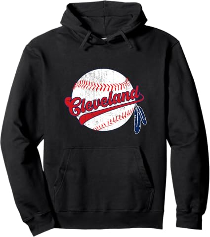
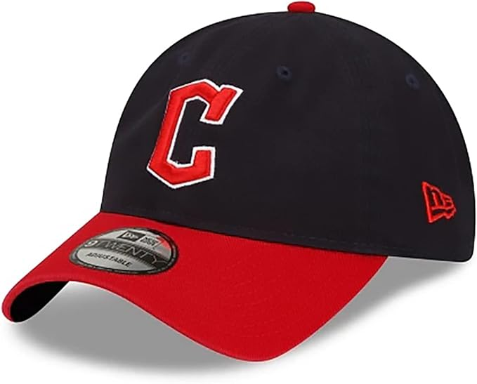
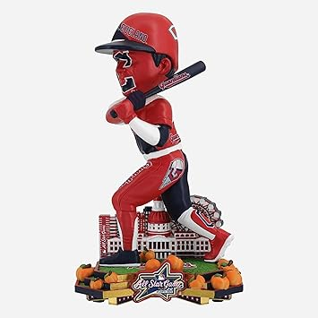

May 2026
If you've been researching guardiansballclub lately, you know the market changed a lot in 2026. New options, shifting prices, and plenty of noise to cut through.

→ #4 — Bring in The Reliever Relief Pitcher Parody Drinking Mens Apparel for Baseb — Top rated
→ #3 — Team Vintage Style Mens T-Shirt for Baseball Fans — Great value

→ #1 — 47 MLB White Team Color Primary Logo Clean Up Adjustable Strap Hat Cap Adul — Great value

→ #2 — Franklin Sports MLB Team Licensed Baseball Wristbands MLB Team Logo Sweat W — Great value
→ #5 — Baseball Shirt Fan Cityscape T-Shirt with Urban Skyline Graphic — Highly reviewed
Skipping negative reviews — A 4.5-star product with durability complaints tells you more than a 5-star product with 8 reviews.
Panic buying on sale days — Prime Day and Black Friday guardiansballclub deals aren't always real discounts. Check year-round pricing.
Ignoring the fine print — Some guardiansballclub listings look great until you realize key parts are sold separately.
The guardiansballclub space keeps improving, and 2026 is a solid time to buy. See our full rankings at guardiansballclub.com for side-by-side comparisons.